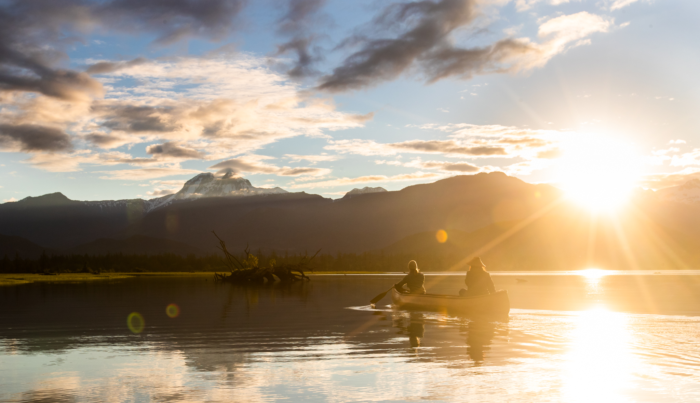

Whistler, BC
Canoe Delivery Whistler
River of Golden Dreams shuttles & canoe delivery anywhere in Whistler — Alta, Lost, Green, Nita, Alpha and the Whistler RV Park. Up to 3 paddlers per canoe.
Whistler, BC
River of Golden Dreams shuttles & canoe delivery anywhere in Whistler — Alta, Lost, Green, Nita, Alpha and the Whistler RV Park. Up to 3 paddlers per canoe.

Canoes Delivered in Whistler
RoGD is the flagship Whistler paddle: a downstream float from Alta Lake to Green Lake through one of the prettiest wetland corridors in BC. The catch is the logistics — you need a put-in at Rainbow Park and a takeout 5+ km later at Meadow Park, with the boat magically getting between them.
That's exactly what we do. Canoes delivered to Rainbow Park, picked up at Meadow Park, you just paddle. Same flexibility for Alta, Lost, Green, Nita, Alpha, or the Whistler RV Park — pick a launch, pick a time, we handle the rest.
Where We Deliver
Our marquee Whistler service. Drop at Rainbow Park (Alta Lake), pickup at Meadow Park (Green Lake). The full RoGD downstream paddle — about 2–3 hours. Read our complete RoGD guide.
Three put-ins — Rainbow, Lakeside, Wayside. Best in calm morning conditions; afternoon thermals can pick up.
Turquoise glacial water with the Wedge towering above. Bigger and colder than Alta — canoes handle it better than SUPs when wind picks up.
Walking distance from Whistler Village. No motorboats, easy swim breaks, great for families with younger kids in the canoe.
Small, quiet, almost always glass. Sunrise or sunset paddle territory — especially good for couples.
Family-friendly Creekside lake with a beach park. Calm, shallow, and forgiving — perfect for a first canoe outing.
Direct delivery to campsites via our long-standing partnership. Book through us or the campground at (604) 905-2523.
Quieter, warmer water 25 minutes north of Whistler. Family beach park, easy launch, great escape from peak-season crowds.
5-Star Google Reviews
"We were visiting Whistler and didn't think we could get a canoe rental up there. Jeremy delivered to the RV park and we spent the whole day on the water. The kids absolutely loved it. Thank you!"
"Rented a canoe for the whole weekend. Pickup and dropoff was seamless. Jeremy really knows this area inside and out."
"Hands down the best rental experience we've had. The canoes are beautifully maintained and you can tell Jeremy takes real pride in his fleet."
Good to Know
Alta, Lost, Green, Nita, Alpha, plus the Whistler RV Park, and One Mile Lake in Pemberton. RoGD shuttles run between Rainbow Park (Alta) and Meadow Park (Green).
Yes. We drop the canoe at Rainbow Park, you paddle downstream to Meadow Park, and we pick up there. Full RoGD guide here.
For families with younger kids, dogs, or anyone nervous about balance, the canoe wins easily — up to 3 paddlers fit comfortably and nobody needs to stand. For solo paddlers or fitness sessions, paddleboards are the call.
Late June through early September is prime. Water warms up by July; RoGD is best in late June through July when water is highest.
No experience needed for Alta, Lost, Nita or Alpha. Green Lake we recommend prior canoe experience because of its size and exposure to wind.
Ready?
Pick a lake (or the RoGD shuttle) and we'll meet you at the launch. Book a day ahead in July and August.
Or email squamishcanoerental@gmail.com
Staying in Squamish? See canoe delivery in Squamish.